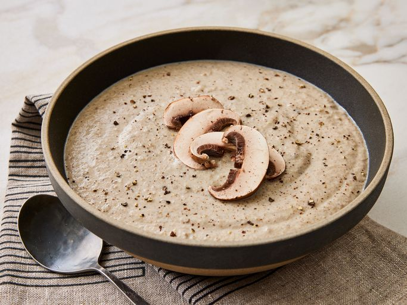

Cream of Mushroom Soup

Description
This homemade cream of mushroom soup can be made with button mushrooms, or add other delicious varieties like shiitake or cremini for a more intense mushroom flavor. Experiment to find your favorite flavor combination!
Ingredients
- 5 cups sliced fresh mushrooms
- 1 ½ cups chicken stock
- ½ cup chopped onion
- ⅛ teaspoon dried thyme
- 3 tablespoons butter
- 3 tablespoons all-purpose flour
- ¼ teaspoon salt
- ¼ teaspoon ground black pepper
- 1 cup half-and-half or heavy cream
- 1 tablespoon sherry
Steps
- Gather all ingredients.
- Simmer mushrooms, stock, onion, and thyme in a large heavy saucepan until vegetables are tender, 10 to 15 minutes.
- Carefully transfer the hot mixture to a blender or food processor. Cover and hold lid down with a potholder; pulse until creamy but still with some chunks of vegetable.
- Melt butter in the same saucepan. Whisk in flour until smooth. Whisk in salt and pepper. Slowly whisk in half-and-half and mushroom mixture.
- Bring soup to a boil and cook, stirring constantly, until thickened.
- Stir in sherry. Taste and season with more salt and pepper if needed.
- Enjoy!
Go back